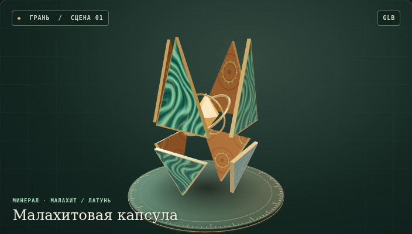

НОЧНАЯ СМЕНА / ОТДЕЛ ДВИЖЕНИЯ
Театр материала.
Потяни за модель, чтобы осмотреть её, или останови движение на интересном кадре.

◆ ГРАНЬ / СЦЕНА 01GLB
ОБРАЗЕЦ 01 · МИНЕРАЛМалахитовая капсула
Подготовка сцены…
Потяни за модель, чтобы осмотреть её, или останови движение на интересном кадре.

Подготовка сцены…